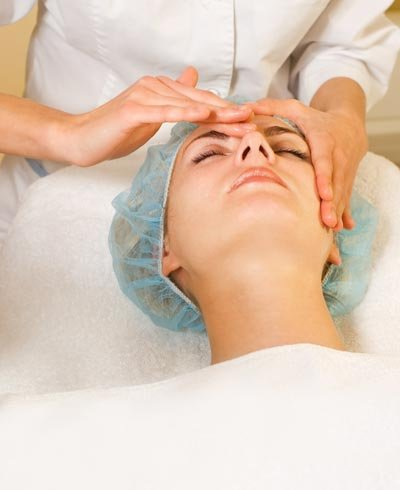
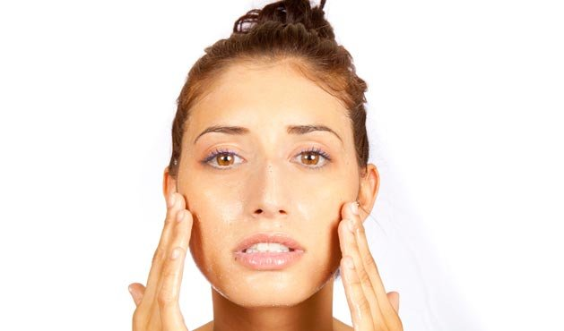
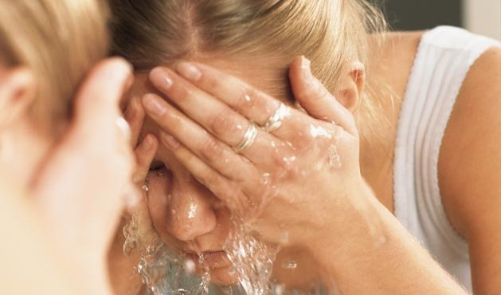
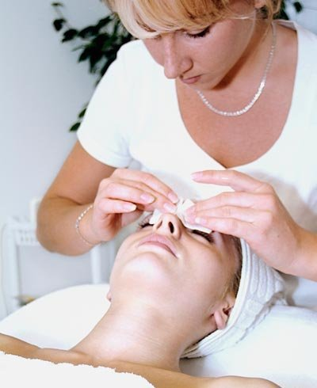
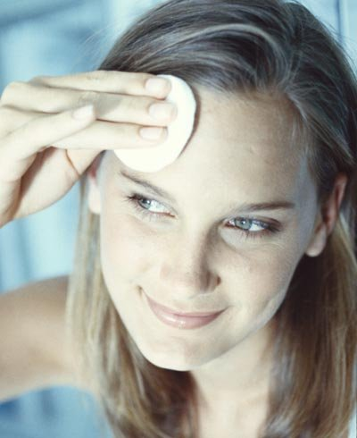
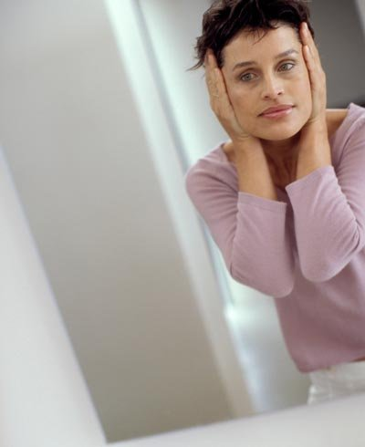

Siga os 7 mandamentos para se ter uma ótima pele no verão e aproveite mais os dias de praia
Escrito por: Redação • Atualizado em: 04/07/2019
Atravessar o verão com a pele linda é um desafio e tanto. Primeiro, o sol (que todo mundo adora e nem pensa em desprezar), depois o cloro e o sal do mar completam uma receita que tem tudo para terminar em ressecamento, linhas de expressão carregadas e, entre as descuidadas, envelhecimento antes da hora. Mas não precisa ser assim.
Tomando as precauções certas, dá para ficar bronzeada e curtir a praia sem sofrer o resto do ano, de arrependimento. Como? A dermatologista Letícia Lenci, da Clínica Guilherme de Almeida, em São Paulo, ensina. Veja a seguir uma série de dicas para evitar manchas, manter a hidratação e até riscar os pelos encravados da sua lista de preocupações nesta fase, quando a diversão é o que mais importa!
1º) Tratamentos proibidos
Evite qualquer tratamento que danifique a camada mais superficial da sua pele (epiderme). Esse é o caso de jatos com laser e peelings químicos. O sol, nesta época do ano, pode causar algumas manchas em resposta negativa ao tratamento. É o que os especialistas chamam de hipercromia pós-inflamatória.
2º) Ressecamento
Previna-se contra o ressecamento dos cabelos e da pele, muito exposta ao sol e mar. Para isso, a solução é simples: uma loção hidratante após o banho e o uso mais rotineiro dos cremes de cabelo sem enxágüe. Também podem surgir espinhas, devido ao uso freqüente do filtro solar sem higienizar a pele adequadamente. Para evitar isso, não deixe de passar um tônico no rosto ao menos uma vez por dia e esfoliar a pele semanalmente. O mesmo tratamento ainda controla os pêlos encravados, comuns após depilações feitas com um intervalo muito curtos.
3º) Esfoliação
Aproveite para fazer esfoliações semanais. Mas sempre de forma leve, sem agredir a sua pele. É uma boa indicação, inclusive, devido ao excesso de filtros solares usados nesta época do ano, principalmente na face. Vale fazer em casa desde que, antes, você tenha sido orientada pela sua esteticista ou por um médico dermatologista. Também tome cuidado com a procedência de ingredientes contidos em fórmulas caseiras, que podem manchar sua pele ou até causar reações alérgicas.
4º) Limpe a pele diariamente
Mesmo que seu rosto apresente uma aparência mais ressecada, é importante retirar as impurezas com um produto específico. Duas vezes ao dia, lave a face com sabonetes líquidos e não abra mão de um bom demaquilante. Essas loções retiram a maquiagem sem remover a oleosidade natural da sua pele (importantíssima no verão).
5º) Limpeza de pele
Pegue leve na limpeza de pele feita na esteticista. Ela não deve ser muito agressiva para evitar formação de manchas, provocadas pela exposição solar. Nada de muito apertão e cutucões doloridos. Peça a sua esteticista que retire o excesso e nem pense em sair da clínica sem um bom protetor solar.
6º) Prefira loções
Prefira loções tônicas a fórmulas adstringentes. Estas últimas só são indicadas para quem realmente tem a pele oleosa demais e sofre com o acúmulo de impurezas. Se ficou na dúvida, marque uma consulta com o dermatologista antes de experimentar qualquer produto.
7º) Água termal
Espirre jatinhos de água termal no rosto, durante o dia. O produto é vendido em forma de spray e garante uma aparência refrescada e mais viçosa. Isso porque a água termal é rica em minerais, que funcionam como antioxidantes e têm efeito calmante.